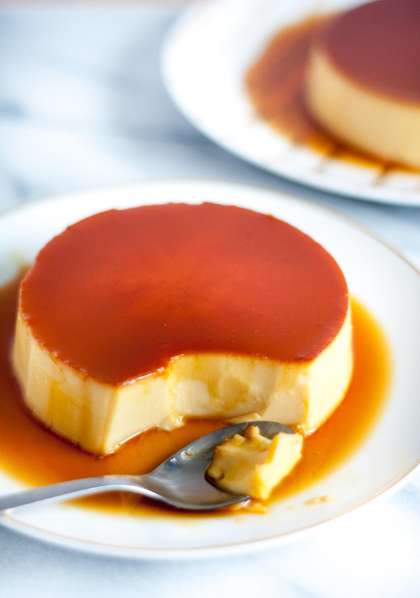

Leche Flan

A traditional Filipino dessert influenced by Spanish history. This rich dessert is rich and decadent that melts in your mouth!
Ingredients
- 10 large egg yolks
- 12 oz condensed milk
- 1 can evaporated milk
- vanilla extract
- lemon zest
- sugar (for caramel)
Steps
- Spoon 5 tbsp of sugar into your llanera and heat over medium-high, stirring constantly to avoid burning. Continue to heat and stir the sugar until it caramelizes into a dark amber color. Set aside to cool and harden.
- Separate the egg yolks from the egg whites. Add the yolks to a bowl, then slowly break the yolks with a whisk and stir gently until smooth.
- Pour in the condensed milk, evaporated milk, and vanilla extract. Stir gently until smooth and evenly incorporated.
- Strain the mixture at least 3 times to remove any stray egg bits and impurities.
- Bring your steamer to a boil, then lower the heat to a simmer. Divide the mixture into 2 llaneras and cover tightly with foil.
- Steam for 30 – 35 minutes (doneness can be checked if a toothpick inserted into the centre of the flan comes out clean).
- Let set in the refrigerator overnight. Invert onto a serving plate and enjoy!